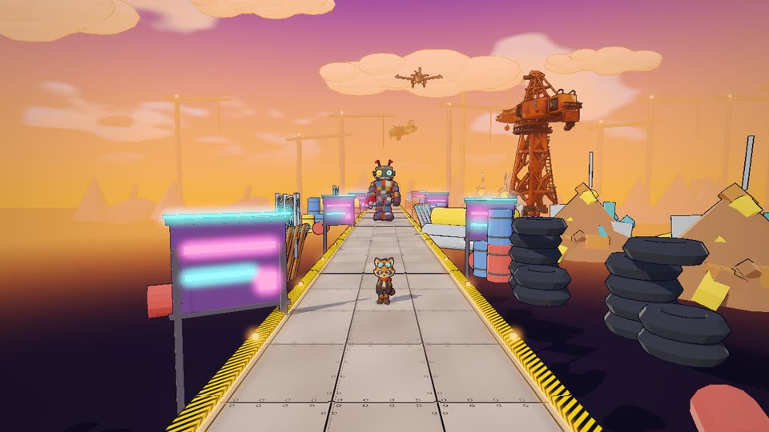
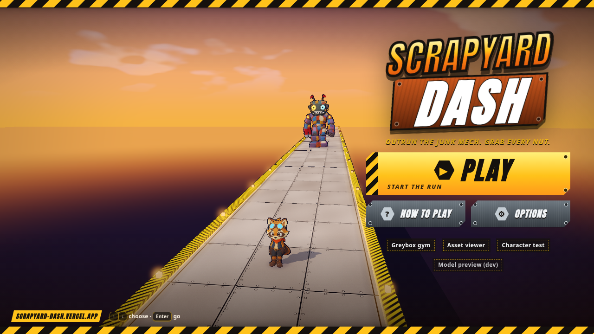
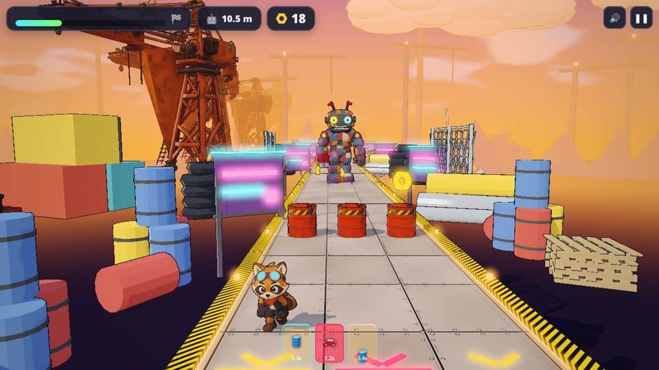
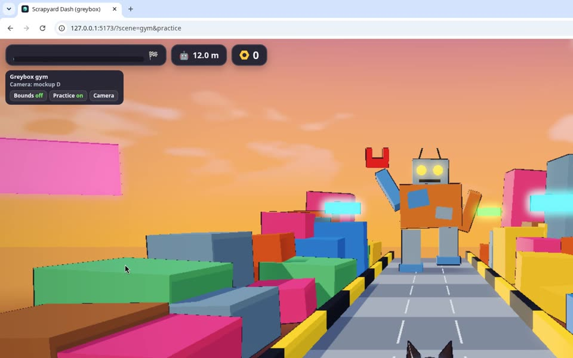
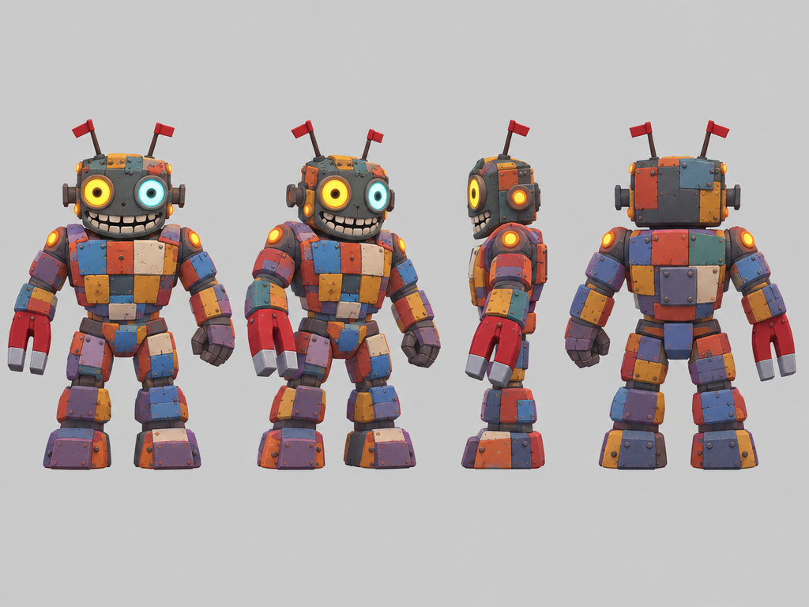

How Grok Bot built Scrappy Yard from a starter template
A raccoon in goggles sprints toward the camera through a neon scrapyard while a patchwork junk mech stomps after him. Barrels, scrap cars, gaps, hex nuts. Chong-U directed in plain chat messages; Grok Bot did the building, from git clone of vgd-wasm-game-template v2.7.0 on Nov 3 to a public web build the next afternoon.
share/media/trailer/scrappy-yard-gameplay-trailer.mp4share/media/trailer/scrappy-yard-process-trailer.mp4The original 36 s cut from Nov 4 (when the game was still Scrapyard Dash) is further down under B-roll.
main through f8fa29cThe pipeline in one line
Chat-directed iteration on a solid template beats starting from zero. The template already had the engine, the premise → mockups → kickoff → slice steps, release checks and smoke tests. That let every chat message be about the game ("the sides are popping in", "he looks like he's gliding") instead of plumbing.
Sections









Gameplay b-roll (Nov 5, current build)
Fresh headless captures of the Scrappy Yard build, HUD hidden, 1280×720 WebGL2, 30 fps. Muted on loop; click through to the file for raw b-roll.
share/media/trailer/gameplay/broll/sy-run-long.mp4share/media/trailer/gameplay/broll/sy-chase-long.mp4share/media/trailer/gameplay/broll/sy-high-long.mp4share/media/trailer/gameplay/broll/sy-mockd.mp4share/media/trailer/gameplay/broll/sy-intro.mp4share/media/trailer/gameplay/broll/sy-crash.mp4B-roll reel
Clips play muted on loop. The gym clip is the first video Grok Bot recorded (Nov 4, 8:27 AM, when Chong-U asked to "take a bit of b-roll"). The rest are the Nov 4 headless captures cut for the first trailer.
share/media/trailer/scrapyard-dash-trailer.mp4share/media/kickoff/broll/gym-broll.webmshare/media/trailer/project/assets/footage/intro.mp4share/media/trailer/project/assets/footage/dodge.mp4share/media/trailer/project/assets/footage/nuts.mp4share/media/trailer/project/assets/footage/wide.mp4share/media/trailer/project/assets/footage/caught.mp4Play it
Renamed Nov 5: the game is now Scrappy Yard (commit b623903). It was built as "Scrapyard Dash", so older trailers, menu captures and some file names still carry the old name.
Public build: scrappy-yard.vercel.app (production alias on the scrapyard-dash Vercel project; first shipped as scrapyard-dash.vercel.app from commit 4708ba8 on Nov 4). Later passes (audio, world dressing, new menu, intro cutscene, rename) are in the live build; a further polish pass (side terrain, upright planes, faster run, mech smash FX, menu without the mech, idle + jump-out chase, surge run) was parked unshipped as of Nov 5 morning and is not covered as finished work here.